01Roles y sedes
Cada empleado pertenece a una sede. Personas, turnos, grupos, festivos, política, tipos de permiso, correo y caseta son de cada sede.
| Tipo de usuario | Qué puede hacer | Alcance |
|---|---|---|
| Oficinas / Planta | Pedir vacaciones, home office y permisos. | Solo lo suyo. |
| Jefe (marca en el empleado) | Aprobar a su equipo y ver Mi equipo. | Personas de su sede que lo tienen como jefe. |
| Administrador | Solo Ajustes de su sede: grupos, turnos, festivos y configuración (política, tipos de permiso, jornadas, flujos, correo y caseta). No ve empleados, solicitudes, calendario general ni bitácora. Pide sus vacaciones como oficinas. | Su sede. |
| Médico de planta | Solo Consultas médicas. No pide vacaciones ni permisos. | Su sede. |
| Caseta | Solo Caseta: permisos del día y solicitudes de ingreso por retardo. No pide vacaciones ni permisos; no requiere correo corporativo. | Su sede. |
| GH | Todo el menú de Administración. | Su sede. |
| Gerencia GH | Lo mismo que GH. | Su sede y las que le asigne el super administrador. |
| Super administrador | Todo, más la pestaña Super administrador. | Todas las sedes. |
Si administras varias sedes, elige la sede en el selector del menú (debajo del logo). Con Todas mis sedes ves todo; lo que crees se guarda en la sede del aviso azul de cada pantalla.
02Empleados
La tabla muestra a cada empleado con su rol, jornada, sede, jefe y días disponibles. Con el ojo abres sus vacaciones y su saldo.
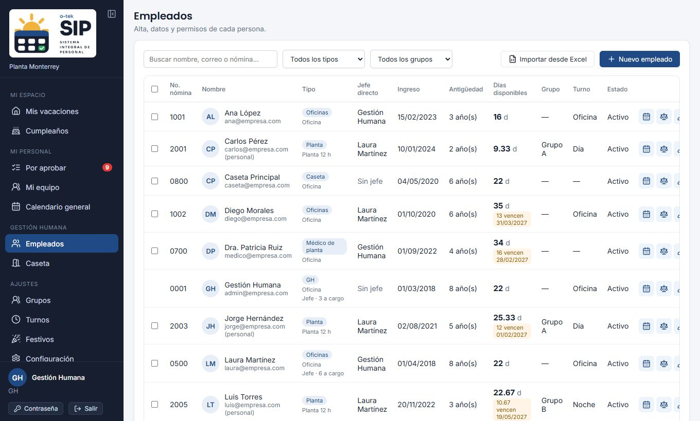
Dar de alta
- Pulsa Nuevo empleado. Si tiene correo de O-tek, búscalo en Microsoft: se llenan nombre, puesto, departamento, nómina, ingreso, jefe, sede y foto.
- Completa las secciones del formulario: Cuenta y acceso (correos, nómina, tipo de usuario), Datos personales (nombre, cumpleaños, teléfono, dirección, contacto de emergencia), Datos laborales (sede, ingreso, puesto, departamento, jefe, jornada, turno, grupo de planta y saldo) y Permisos en el sistema.
- En Días de vacaciones disponibles captura su saldo actual si ya tiene historial (se llenan primero en el periodo actual y el resto en el anterior).
- Guarda. Si entrará con contraseña, se genera una contraseña temporal de 6 dígitos que solo se muestra una vez: entrégasela.
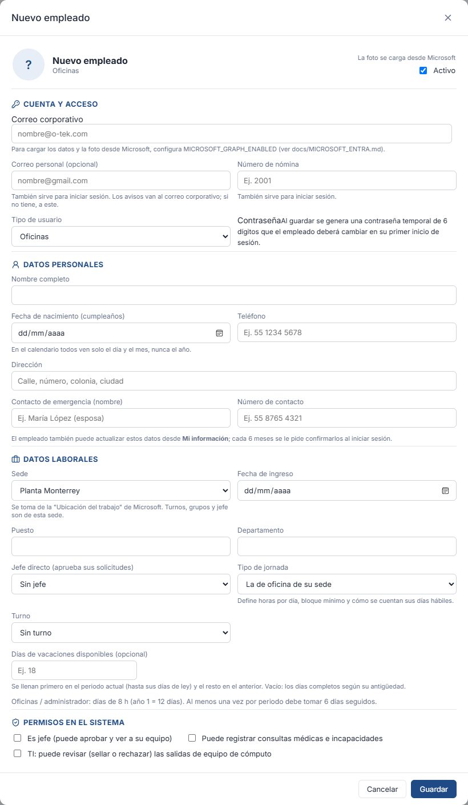
Importar desde Excel
- Elige la sede en el menú y pulsa Importar desde Excel.
- Sube el archivo con las columnas Código (nómina), Empleado, Fecha de ingreso, los dos periodos con días adeudados y Comentarios. El comentario «Días de 12 horas» marca al personal de planta; los demás quedan como oficinas. «7+8 horas» son 7 días de su jornada más 8 horas.
- Revisa la vista previa: quiénes son nuevos, quiénes ya existen (no se modifican) y en qué periodo se cargan sus días. Nada se guarda todavía.
- Escribe la contraseña inicial y pulsa Dar de alta. Cada empleado entra con su número de nómina y esa contraseña, y el sistema le pide cambiarla.
- Después asigna a cada uno su jefe y, a los de planta, su grupo y turno. Los de oficina pueden quedar sin correo; captúralo cuando lo tengas.
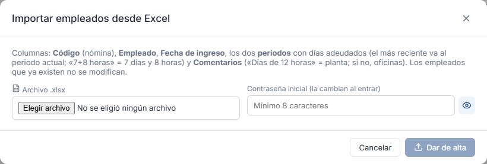
Restablecer la contraseña de varios empleados
En Empleados, cada fila tiene una casilla. Solo aparece en quienes se puede restablecer: activos, que entran con contraseña y que no son tu propia cuenta.
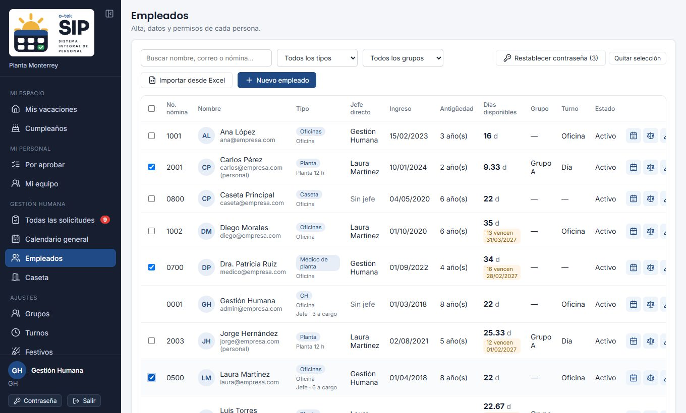
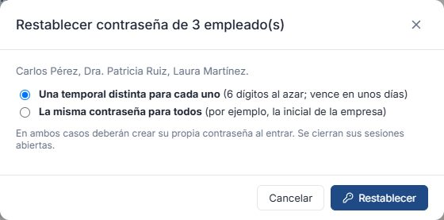
- Marca a los empleados. La casilla del encabezado elige a todos los de la lista con los filtros actuales (por ejemplo, un grupo o un departamento).
- Pulsa Restablecer contraseña (N).
- Elige una temporal distinta para cada uno (6 dígitos al azar, vence en unos días) o la misma contraseña para todos (mínimo 6 caracteres).
- Pulsa Restablecer y confirma. Sus contraseñas anteriores dejan de funcionar y se cierran sus sesiones abiertas.
- Aparece la lista con la contraseña de cada uno. Pulsa Copiar lista o Descargar (Excel) y entrégalas.
Al cerrar la ventana ya no se pueden consultar. Si descargas el archivo, guárdalo en un lugar seguro y bórralo al terminar de entregarlas. En ambos casos cada persona debe crear su propia contraseña al entrar. Si alguno no se pudo restablecer, la ventana indica el motivo. Cada restablecimiento queda en la bitácora.
Permisos en el sistema
- Es jefe: puede aprobar y ver a su equipo.
- Puede registrar consultas médicas e incapacidades: le da el apartado de servicio médico a alguien que no es médico (enfermería, paramédico).
- Sedes adicionales (Gerencia GH): solo las asigna el super administrador.
Para los tipos Médico de planta y Caseta no se captura saldo: no piden vacaciones ni permisos. El correo corporativo es opcional en todos los tipos de usuario (por ejemplo, supervisores de planta). Sin correo, el empleado entra con su número de nómina; los avisos van al corporativo y, si no tiene, al personal.
Cada empleado actualiza sus datos personales desde Mi información y cada 6 meses SIP-O le pide confirmarlos. Arriba del formulario ves cuándo lo hizo por última vez. Tus cambios como GH no reinician ese conteo.
Capturar a nombre de un empleado
Desde sus vacaciones puedes registrar solicitudes por él, incluso con fechas pasadas, y hacer ajustes de saldo con una nota. Todo queda en la bitácora.
03Todas las solicitudes
En Mi personal → Por aprobar ves todas las solicitudes de tus sedes (los jefes ven ahí solo las de su personal). Las pestañas Vacaciones, Permisos y home office, Incapacidades y Consultas médicas muestran un círculo rojo con los pendientes. Filtra por estado, tipo o empleado. De las consultas médicas solo ves la fecha, el paciente y el medicamento: la información clínica está cifrada y solo la ven el servicio médico y el paciente.
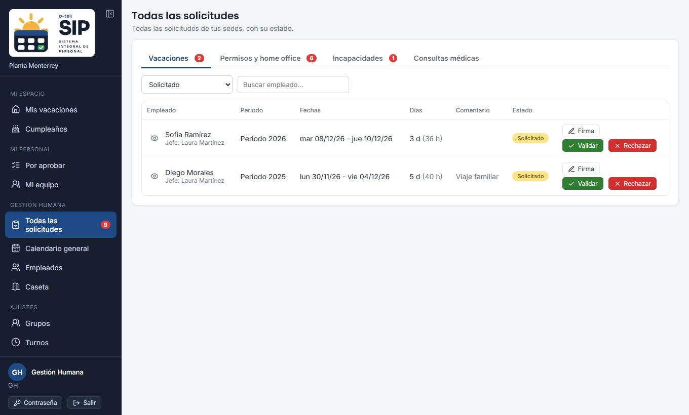
- Validar: aprueba en forma definitiva, aunque el jefe todavía no haya aprobado.
- Rechazar: pide el motivo; el empleado lo ve.
- Cancelar (validadas): devuelve el saldo y, si era un permiso con aviso a caseta, se avisa la cancelación.
- Firma: muestra la firma del empleado.
Con aprobación jefe + GH, las que aprobó el jefe aparecen como Aprobada por el jefe y “falta GH”.
Accesos a planta por retardo
Las solicitudes que registra caseta llegan como llegada tarde con la etiqueta Caseta: nombre del guardia. Te llegan a ti (en SIP-O, por correo y en Teams) cuando el empleado no tiene jefe o caseta marcó que el jefe no está en planta. Para autorizar indica el tiempo en nómina; para negar, el motivo es obligatorio. Si un jefe negó desde Teams sin motivo, verás el aviso Agregar motivo.
Incapacidades
Las genera el servicio médico y las valida el jefe directo (o GH si no tiene). El jefe puede ajustar los días o rechazarlas con motivo; al resolverlas recibes un correo. En esta pestaña ves todas las de tu sede y también puedes validarlas o rechazarlas. No se muestra información clínica.
04Calendario general
Está en Mi personal → Calendario general. Vista mensual de todo el personal de tus sedes: vacaciones, home office, permisos, incapacidades y consultas por persona y por día, con festivos y descansos. Filtra por grupo, tipo de usuario o nombre para detectar cruces antes de aprobar. Los jefes también tienen este calendario (Calendario del equipo), pero solo con su personal directo y los integrantes de los grupos o áreas donde son jefes.
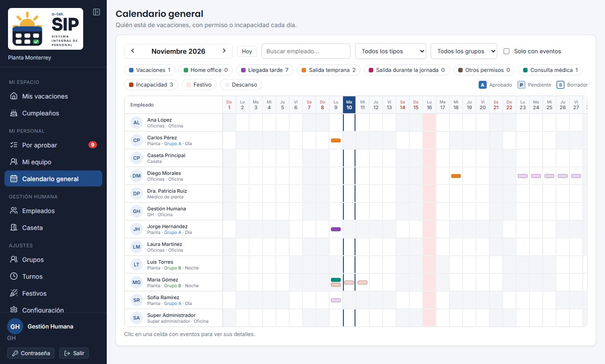
05Caseta
GH también tiene Caseta en la sección Gestión Humana del menú, con lo mismo que ve el personal de caseta: los permisos autorizados del día, la búsqueda de cualquier persona y las solicitudes de ingreso por retardo con su estado. Úsalo para apoyar a caseta o revisar los retardos del día.

06Salida de equipo de cómputo
La salida de equipo se pide como un permiso común: Salida de equipo, por días, sin tiempo en nómina y aprobado por el jefe (y por GH si la sede pide dos aprobaciones). Ya no se usa el formato F-630-03 ni la revisión de TI y caseta.
- Cada sede tiene el tipo Salida de equipo en Configuración → Tipos de permiso; ahí puedes cambiar su nombre, color, límite o cadena de aprobación, o desactivarlo.
- Las solicitudes aparecen en Por aprobar → Permisos y home office y en el calendario como los demás permisos.
- Las salidas registradas antes con el formato se conservan en la base de datos.
07Grupos y ciclos
Los grupos definen qué días trabaja el personal de planta:
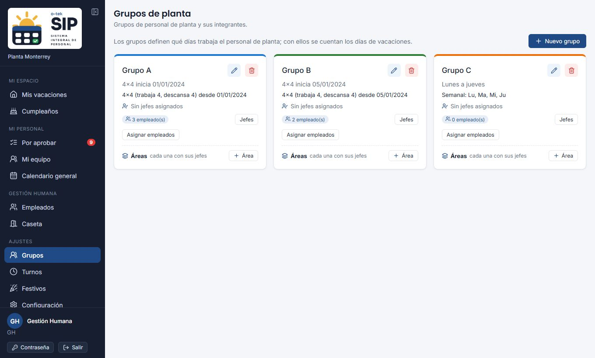
- Semanal: días fijos de la semana (por ejemplo lunes a jueves).
- Rotativo: días de trabajo y de descanso a partir de una fecha de inicio (por ejemplo 4×4).
Desde el grupo asignas a sus miembros y, con Jefes, uno o varios jefes del grupo (por ejemplo, el supervisor de cada turno): cualquiera de ellos ve a los integrantes en Mi equipo y puede aprobar sus solicitudes. Si un integrante no tiene jefe directo, sus solicitudes van por omisión al primer jefe del grupo.
Áreas del grupo
Cuando en un mismo grupo hay personal de distintas áreas (por ejemplo producción, Calidad, AMP o APT) con jefes diferentes, crea un área en la tarjeta del grupo con + Área. Cada área tiene sus Jefes y sus Integrantes (se eligen entre los integrantes del grupo) y comparte el ciclo de trabajo del grupo. A quien está en un área lo atienden los jefes de su área; los jefes del grupo atienden a quienes no tienen área. Si eliminas un área, sus integrantes siguen en el grupo. Las vacaciones de planta solo descuentan días laborales de su ciclo.
08Turnos y rotación
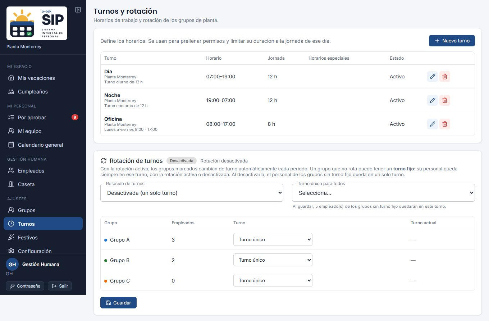
Horario del turno
- Horario general: entrada, salida y horas por jornada.
- Horario por día: marca días con horario propio. Oficina L–J / V corto carga lunes a jueves 8:30–17:30 y viernes 8:30–15:00.
- Horarios especiales: por ejemplo Short Friday, con rango de fechas, días, horario y repetición. Tienen prioridad sobre el horario del día.
Los permisos y los retardos de caseta usan el horario del turno en esa fecha. Sin turno, caseta no puede registrar retardos.
Rotación de turnos
Activa la rotación, elige los turnos que rotan y su orden, cada cuántas semanas cambian, la fecha de inicio y el turno con el que empieza cada grupo. Con el aviso semanal, cada viernes cada persona recibe por correo su turno de la semana siguiente.
Turno fijo de un grupo
Un grupo que no rota puede tener un turno fijo: en la tabla de grupos, columna Turno, elige Siempre Día (o el turno que corresponda). Su personal queda siempre en ese turno, con la rotación activa o desactivada, y quien se agregue después al grupo (o a una de sus áreas) toma ese turno.
Los Grupos A y B rotan entre Día y Noche cada semana (marca Rota y elige con qué turno empieza cada uno). El Grupo C no rota y queda Siempre Día. Si desactivas la rotación, A y B pasan al turno único y C sigue de día.
09Festivos
Cada sede tiene sus festivos: indica si aplica a todos, solo a oficina o solo a planta. No se descuentan de las vacaciones y se ven en el calendario de cada empleado.
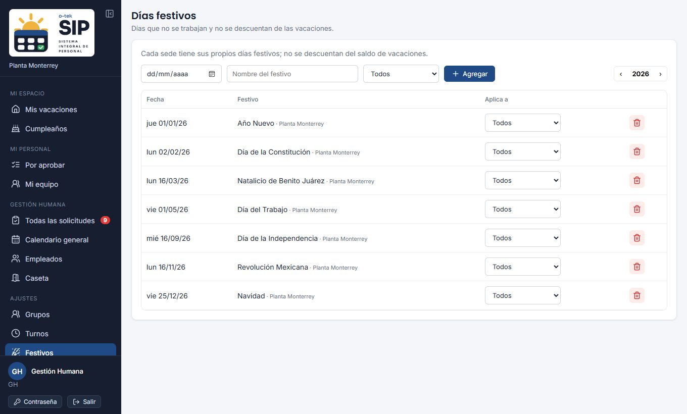
10Configuración de la sede
Días por antigüedad
Tabla de días por años de servicio. Si la sede no tiene tabla propia usa la de la sede principal; al guardar se crea la suya y los saldos se recalculan.
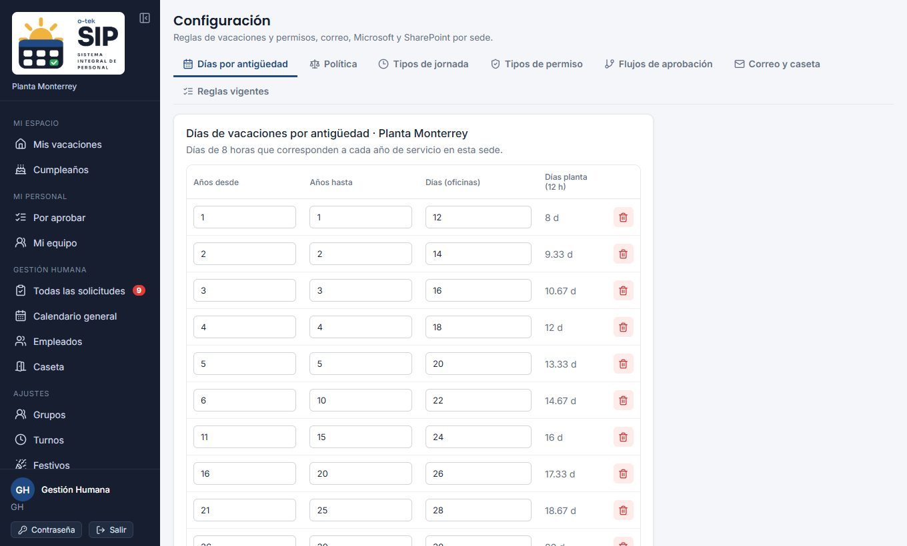
Política de vacaciones y permisos
| Opción | Qué controla |
|---|---|
| Vigencia (meses) | Cuánto duran los días de cada periodo (México: 18). |
| Anticipación | Días mínimos para pedir vacaciones. |
| Cuándo se generan los días | Aniversario, año calendario (cada 1 de enero; el primero proporcional) o mes a mes. |
| Aprobación | Por separado para vacaciones y permisos: solo el jefe, o jefe y después GH. |
| Cómo se otorgan los días | Equivalencia en horas (tabla × 8 h) o días completos. |
| Módulos | Servicio médico y cumpleaños en el calendario. Con el módulo activo, cada persona ve los cumpleaños del personal de su sede y puede ocultarlos de su calendario. |
Tipos de jornada
Por cada jornada: horas por día, bloque mínimo de días seguidos, si los días hábiles siguen el ciclo del grupo, si el saldo se lleva en horas o en días y si permite vacaciones por horas con su mínimo.
Correo y avisos a caseta
- Correo de envío de la sede: Microsoft 365 (buzón con permiso Mail.Send) o SMTP (servidor, puerto, seguridad, usuario y contraseña cifrada).
- Avisos a caseta por correo: actívalos, escribe los correos y elige qué permisos se avisan.
- Pulsa Enviar correo de prueba después de guardar. En Últimos envíos puedes reintentar los que fallaron.
Si la sede no tiene remitente configurado, SIP-O funciona igual, pero no se envían avisos (jefes, GH, incapacidades, retardos ni caseta).
11Tipos de permiso
En Configuración → Tipos de permiso. Hay cuatro tipos base (llegada tarde, salida temprana, salida durante la jornada y home office) que solo se activan o desactivan, y puedes agregar los que necesites.
- Pulsa Agregar tipo de permiso, escribe el nombre y elige su color en el calendario.
- Elige cómo se pide: Horas (un día, con horario) o Días (un rango, como el home office).
- En los de horas decide si se pide el tiempo en nómina.
- Define el límite: una cantidad por mes, por año o en total. Vacío = sin límite.
- En los de días indica el máximo de días naturales por solicitud (31 si lo dejas vacío). Guarda con el ícono verde.
| Se pide por | El límite cuenta | Ejemplo |
|---|---|---|
| Días | Días laborales del empleado. | Día de cumpleaños: 1 día por año. |
| Horas, en permisos | Cada solicitud cuenta como uno. | Llegada tarde: 3 permisos por mes. |
| Horas, en horas | Las horas de cada permiso. | Trámite personal: 8 h por año. |
Cuentan borradores, pendientes y validados. Un tipo agregado se elimina mientras no tenga solicitudes; si ya las tiene, desactívalo y conserva su historial.
Flujos de aprobación
En Configuración → Flujos de aprobación armas cadenas con pasos en orden: Jefe directo, Jefe del jefe, GH de la sede, TI o una persona específica. Luego, en Tipos de permiso, eliges en la columna Aprobación qué flujo usa cada tipo (o Como la sede).
- Al aprobar un paso se activa el siguiente; un rechazo en cualquier paso termina la solicitud.
- En los pasos de GH o TI basta con que apruebe uno. Si dos pasos seguidos tocan a la misma persona, se aprueban juntos.
- Si un paso no tiene a quién pedírselo (p. ej. el jefe no tiene jefe), se omite o se impide enviar la solicitud, según lo configures.
- GH siempre puede validar directamente; los pasos que faltaban quedan omitidos.
- Los cambios aplican a los permisos que se envíen después; los que están en curso siguen con su cadena. Los retardos registrados en caseta siguen su propio flujo.
- Cada paso que se activa avisa por correo a quien lo aprueba. Si el paso está marcado con Teams, también le llega su tarjeta de aprobación (en GH o TI, a todos; responde el primero). Con aprobación por lista de SharePoint, el flujo de Power Automate debe dispararse al crearse o modificarse el elemento (ver la guía en Super administrador → Listas de SharePoint).
- En el detalle del permiso, el empleado y los aprobadores ven la línea de pasos: quién aprobó, cuándo, por SIP-O o Teams, y qué paso sigue.
12Bitácora
Registra quién cambió qué y cuándo, con el valor anterior y el nuevo.
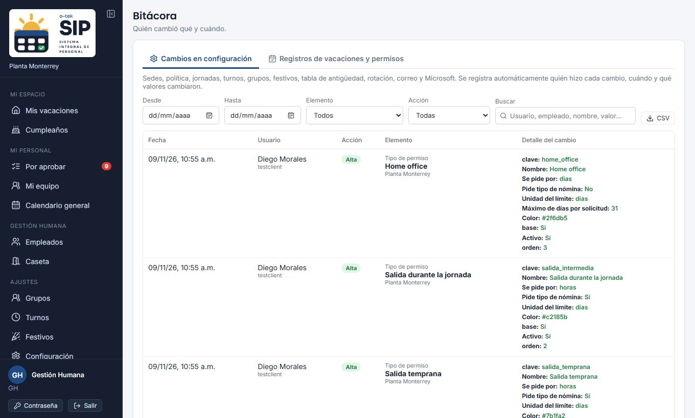
- Cambios en configuración: sedes, política, jornadas, turnos, grupos, festivos, tabla de antigüedad, rotación, tipos de permiso, correo, Teams y SharePoint.
- Registros de vacaciones y permisos: altas, cambios, estados (incluidos los de Teams), incapacidades y ajustes de saldo.
Filtra por fechas, elemento, acción o texto, y exporta a CSV. Las contraseñas aparecen como “(valor oculto)”. Las consultas médicas tienen su propia bitácora en Consultas médicas.
13Solución de problemas
Un empleado no puede entrar.
Revisa que esté activo y genérale una contraseña temporal. Si entra con Microsoft, su correo en SIP-O debe coincidir con el de Microsoft 365. Tras 5 intentos fallidos se bloquea 15 minutos.
En la lista de empleados, uno de planta no tiene jefe.
Si no tiene jefe directo, la columna Jefe muestra a los jefes de su área o de su grupo, con la leyenda Jefes del área …. Esos jefes aprueban sus solicitudes. Solo aparece Sin jefe si tampoco hay jefes en su grupo o área.
No aparece el jefe al pedir vacaciones.
El jefe debe estar marcado como jefe, activo y en la misma sede que el empleado.
El saldo no coincide.
Revisa fecha de ingreso, jornada, tabla de la sede, cómo se generan los días y los ajustes de saldo. La bitácora muestra quién cambió qué.
Caseta no puede registrar un retardo.
El empleado necesita turno asignado y no debe tener ya una solicitud de ingreso ese día.
No llegan correos.
Verifica el remitente de la sede y envía una prueba. Revisa Últimos envíos.
Una decisión de Teams no se aplicó.
Pide al super administrador revisar los avisos de la integración: indican si la escribió otra cuenta o si quien respondió no puede aprobar.